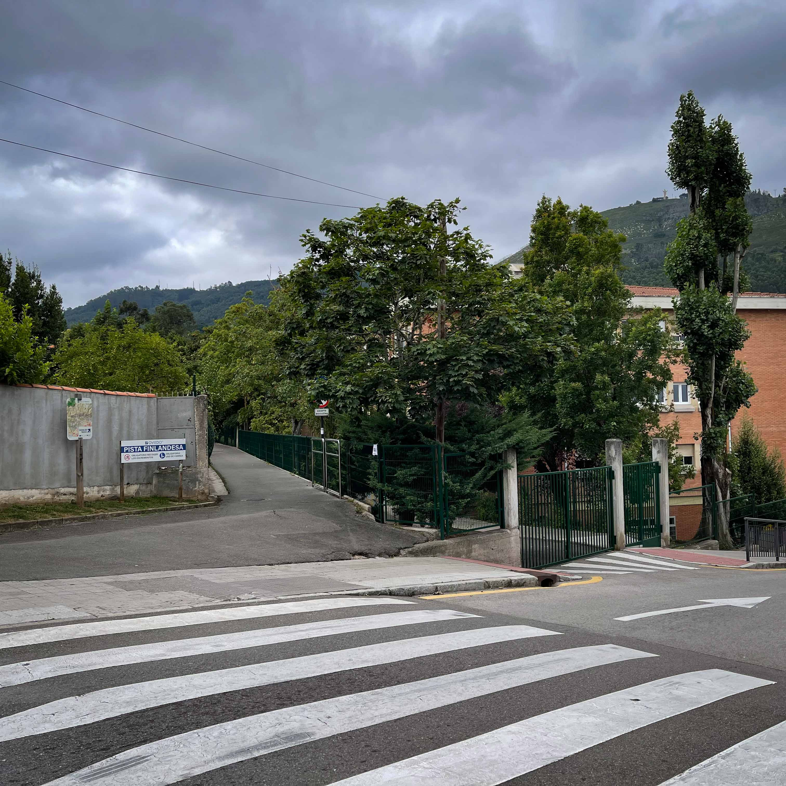

Vídeo del parque que ofrece una vista panorámica de 360º desde el punto de grabación.
Vídeo del parque con vista en 360º
Conocida como "Paseo de Valdeflora"
 PISTA FINLANDESA
PISTA FINLANDESA
La pista finlandesa de Oviedo se hizo en 1987 y tuvo un coste de 22
millones de pesetas.
Existían dos infraestructuras de trascendencia para la capital: la traída de aguas
de Fitoria y un tren minero.
Las obras de la traída de aguas se desarrollaron entre 1568 y 1600.
El
tren minero se inauguró en 1880.
Durante la década de 1870 se planificó la construcción de un ferrocarril en la loma sureste del monte, motivo de preocupación de autoridades y ciudadanos ya que se temía que pudiese afectar a la traída de aguas desde Fitoria hasta el acueducto de los Pilares, que en esa época suponía el principal abastecimiento hídrico de la ciudad.
En el año 1880 se inaugura el ferrocarril minero del Naranco con una longitud de 7,5 km y un ancho de vía de 0,6 metros. Fue construido por "Fábrica de Mieres", una de las empresas pioneras de la minería asturiana, para la extracción de mineral de hierro en Villapérez.
Por su trazado atravesamos puntos de interés como la Fuente de San Esteban, Fuente de Constante, la Fuente de Sapo (que data del año 1500) y fue restaurada en 1990 por la Escuela Taller Vetusta, o las poblaciones de Arnedo y Fitoria .
En el siglo XVI se construyó el Acueducto de los Pilares para abastecer agua desde Fitoria a Oviedo, empleándose parte del trazado actual de la Pista Finlandesa, y se mantuvo activo hasta 1864 cuando fue sustituido por un sistema de depósitos de agua y tuberías a presión. En el año 2013 concluye la obra del colector Norte de Oviedo el cual nace desde la propia Pista Finlandesa para acompañarla en paralelo por su parte inferior y continuar después hasta el río Nora.

Inspiración nórdica
 Consejos Prácticos
Consejos Prácticos
El nombre “Pista Finlandesa” se debe a la similitud del recorrido con las pistas de esquí de fondo que se encuentran en Finlandia, aunque aquí no se esquía, sino que se camina y se corre.
No hay un lugar cercano para el estacionamiento, por lo que se recomienda planificar bien el transporte antes de visitarla y llevar ropa y calzado adecuados según la época del año.
Curiosidades
 Conecta Naranco
Conecta Naranco
La pista es un lugar popular para los fotógrafos aficionados y profesionales, especialmente durante el amanecer y el atardecer, cuando la luz natural resalta la belleza del paisaje..
La pista es una de las rutas de acceso al Monte Naranco, donde se encuentran los famosos monumentos prerrománicos de Santa María del Naranco y San Miguel de Lillo.
Explora las Otras Zonas Verdes de Oviedo

Descubre tu refugio natural en Oviedo, explora los diversos oasis y remansos de paz que la ciudad tiene para ofrecer.
Al igual que en los parques, en estas zonas verdes podrás encontrar Naturaleza | Deporte | Bienestar.


Comienza en la Calle Pedro Caravia, perpendicular a la Avenida de los Monumentos, justo sobre el Colegio Público Parque Infantil y continua hasta terminar en la parroquia de Fitoria.
36 Puntos de luz alimentados por paneles solares, desde la calle Pedro Caravia hasta el primer núcleo de viviendas de la vía.
Paseo de Valdeflora
Pista Finlandesa
Este recorrido de aproximádamente 5,4 Kilometros (ida y vuelta)
ofrece un entorno natural privilegiado, rodeado de flora y fauna autóctonas.
En él podrás encontrar | Naturaleza | Deporte | Historia.

Renacer Natural
Ecos de Vida en la Pista Finlandesa
Un Espectáculo Natural
 El Despertar de la Flora en la Pista Finlandesa
El Despertar de la Flora en la Pista Finlandesa
Se encuentra rodeada de árboles, así como de diversas especies animales autóctonas.
Entre los árboles más destacados veremos: fresnos, chopos, robles, hayas, abedules, espinos,
castaños y laureles.
Es frecuente la presencia de tojos y zarzas a ambos lados del camino.
Pista Finlandesa
Camina
.png) Respira
Respira
Esta zona verde de Oviedo que discurre por la falda del Naranco es una de las más conocidas y transitadas por su cercanía y facil acceso.
Permite tanto pasear como realizar ejercicios físicos a lo largo de su recorrido.Además proporciona unas vistas impresionantes de la cuidad.
Es un lugar estupendo para pasar el día en plena naturaleza pues dispone de zonas de merenderos y al oscurecer se ilumina con puntos de luz alimentados por paneles solares.
En su recorrido te puedes sorprender tanto por su variedad de árboles como por los animales, ya que puedes encontrar desde vacas y caballos a pequeños roedores.
Pista Finlandesa
Para respirar aire puro

Pista Finlandesa
Plantación de árboles
Pista Finlandesa
Ideal para el deporte

Pista Finlandesa
Vistas al hospital

Pista Finlandesa
Árboles frutales

 Cubo inteligente
Cubo inteligente
Pista Finlandesa
El consistorio local ha instalado varias papeleras inteligentes que compactan la basura y una de ellas se encuentra en la Pista Filandesa. La nueva papelera tiene capacidad de 125 litros de residuos compactados (550l no compactados), son alimentadas por energía solar y disponen de localización por GPS y un sistema de software que comunica en tiempo real el nivel de llenado. Los operarios de la limpieza ya saben cuando es el momento de su limpieza y vaciado.

Explora y Disfruta
 Actividades Pista Finlandesa
Actividades Pista Finlandesa
Este parque es muy
popular para diversas actividades deportivas y
recreativas.
Running y Jogging.
Ciclismo (Montaña y Recreativo).
Senderismo y Caminatas.
Ejercicio al Aire Libre (Entrenamiento, Yoga y Meditación).
Actividades Familiares (Paseos en Familia y Juegos).
Eventos Deportivos (Carreras y Maratones).
La pista más grande de la ciudad de Oviedo
 Pista Finlandesa
Pista Finlandesa
La pista Finlandesa es un espacio por el que se puede pasear y
que, al mismo tiempo, nos ofrece a lo largo del recorrido puntos habilitados para realizar diversos
ejercicios físicos.
En él podrás encontrar | Senderismo | Gimnasio |
Un lugar ideal para caminar y hacer ejercicio al aire libre.

Una pista ideal para practicar deporte
 Deporte en la Pista Finlandesa
Deporte en la Pista Finlandesa
La Pista Finlandesa de Oviedo tiene un recorrido llano y muy cómodo de realizar. A lo largo de su recorrido uno se siente en plena naturaleza, y lo mismo se puede encontrar con caballos, que con las famosas vacas asturianas. Numerosas opciones pensadas para disfrutar Oviedo de una manera que quizá no se os había ocurrido: Oviedo al aire libre.


Por lo general, se
considera una
ruta moderada, que se tarda una media de 1h. y 14min en recorrer.
Esta ruta
es popular para correr y pasear; sin embargo, podrás disfrutar de algo de paz
durante los
momentos más tranquilos del día.

La ruta principal de la
Pista
Finlandesa es un recorrido lineal de 2,7 km (5,4 km ida y vuelta) que comienza en la
Calle
Pedro Caravia y termina en Fitoria. Es un trayecto llano y fácil, ideal para
ciclistas de
todos los niveles.


Este gimnasio es un espacio
diseñado para que los usuarios puedan realizar ejercicios físicos en un entorno
natural.
Este gimnasio cuenta con varios aparatos y estaciones de ejercicio que permiten
trabajar
diferentes grupos musculares.
La Pista Filandesa de Oviedo es un recorrido natural que ofrece a sus visitantes la oportunidad de desconectar y sumergirse en un entorno de gran belleza. Este sendero serpenteante, rodeado de vegetación y vistas panorámicas, es ideal para quienes disfrutan del deporte al aire libre, el senderismo y la tranquilidad de la naturaleza.
En nuestro video, te invitamos a recorrer la Pista Filandesa y descubrir cada uno de sus encantos. A lo largo del trayecto, podrás ver cómo este camino se ha convertido en un espacio imprescindible para los amantes de la actividad física y el bienestar en Oviedo. Sumérgete en su atmósfera tranquila y déjate inspirar por el entorno que hace de la Pista Filandesa un lugar único en la ciudad, perfecto para disfrutar de la paz que brinda el contacto directo con la naturaleza.
 ¿TE GUSTA CAMINAR?
¿TE GUSTA CAMINAR?
Caminar al aire libre no solo mejora tu salud cardiovascular y fortalece tus músculos, sino que también reduce el estrés, aumenta la creatividad, y mejora tu estado de ánimo al conectarte con la naturaleza.
Explora y Disfruta
 Otras actividades a realizar en la Pista Finlandesa.
Otras actividades a realizar en la Pista Finlandesa.
Esta pista ofrece
otras actividades con las que se puede disfrutar de la
naturaleza:
Observación de fauna y flora.
Yoga y meditación.
Fotografía.
Sobre Nosotros
Somos un equipo de desarrolladores web dedicados a crear experiencias únicas.
Nos
esforzamos por transformar la visita a los parques por excelencia de Oviedo en experiencias
digitales visualmente atractivas, intuitivas y fáciles de usar.
© Copyright 2024.
Todos los derechos reservados.